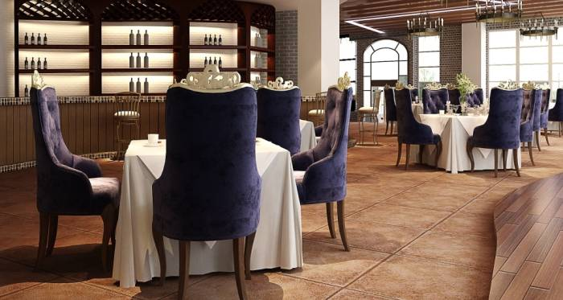

Haukai Restaurant
Located in the town of Kerikeri which is within the picturesque Bay of Islands, Haukai was founded by a couple with a special interest in Maori cuisine. Come and enjoy our traditional Maori and Maori-inspired seafood, followed by a European dairy treat and one of the many red and white wines we have on offer. Or for the meat lovers out there, you could try one of our various meat dishes followed by one of our range of beers and ciders. We also have a selection of non-alcoholic beverages to cater for those who do not want alcohol with their meal.